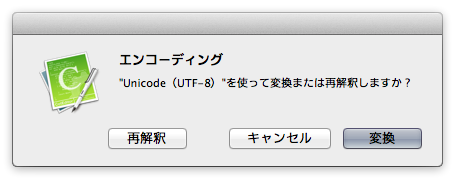

文字化けする
文字化けする
文字化けは、ファイルの文字エンコーディングを CotEditor が正しく認識できなかった場合に発生します。次の手順で文字エンコーディングを変更してください。
- 「フォーマット」メニューの「エンコーディング」を開き、適切な文字エンコーディングを選択します。
- 「再解釈」をクリックします。

ダイアログのボタンの動作は、次の通りです。
- 再解釈
- 指定されたエンコーディングでファイルを開き直します。
- 変換
- 現在のテキストを指定されたエンコーディングに変換します。
- キャンセル
- 操作を取り消します。書類には何も変更は加えられません。
- 文字エンコーディングの変更は、ツールバーの「エンコーディング」からも行うことができます。
- 自動認識する際の文字エンコーディングの認識順序を調整することで、文字化けが発生する頻度をより少なくできます。
=> 文字エンコードの認識順序を調整する - 自動認識する際、環境設定で「エンコーディング指定タグを参照する」がオンになっていると、書類中にある「charset=」「encoding=」「@charset」タグに記述されているエンコーディングが優先されます。
=> 「charset=」「encoding=」「@charset」タグによる自動認識